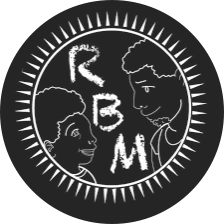
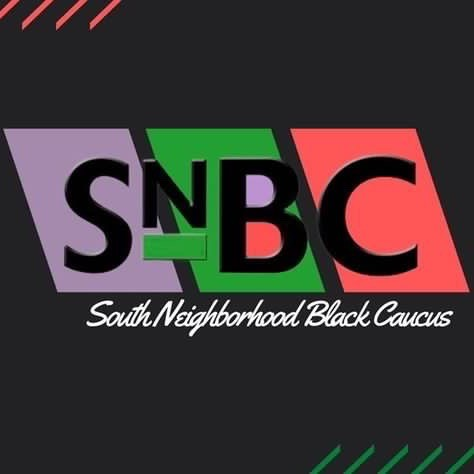

KENNY UMOBI
COMPUTER SCIENCE STUDENT + JACKSON IT CDP

Rising Black Men is an organization set to uplift the black community at MSU. As an executive board member I help Build leadership and professional skills in young black men at Michigan State University through mentorship sessions and workshops. I help spread awareness of important activities going on about the black community.
South Neighboorhood Black Caucus is the black caucus at the south side of MSU. As an e-board member I made awareness of issues and developments in the black community in order to enlighten black students around campus on what is going on in other colleges and the world.
